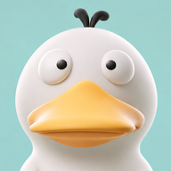

MacroDay
Tổng quan
Món của tôi
Nhật ký ảnh
Thống kê
☾
‹
Hôm nay
›
Năng lượng
?
Trong ngày
0
kcal
●
0 bữa đã ghi
g
0 g
Bạn đã ghi 0 bữa trong ngày
Nhận diện bằng AI
Ghi bữa ăn
Chụp món ăn
Chọn ảnh
Bữa đã ghi
Năng lượng trong 7 ngày
Tổng năng lượng
Ghi bữa ăn
×
Thử nhận diện lại
Bữa ăn
Bữa sáng
Bữa trưa
Bữa tối
Bữa phụ
＋ Thêm món
Năng lượng ước tính
—
Lưu vào nhật ký
×
Sửa khẩu phần
Hủy
Lưu khẩu phần